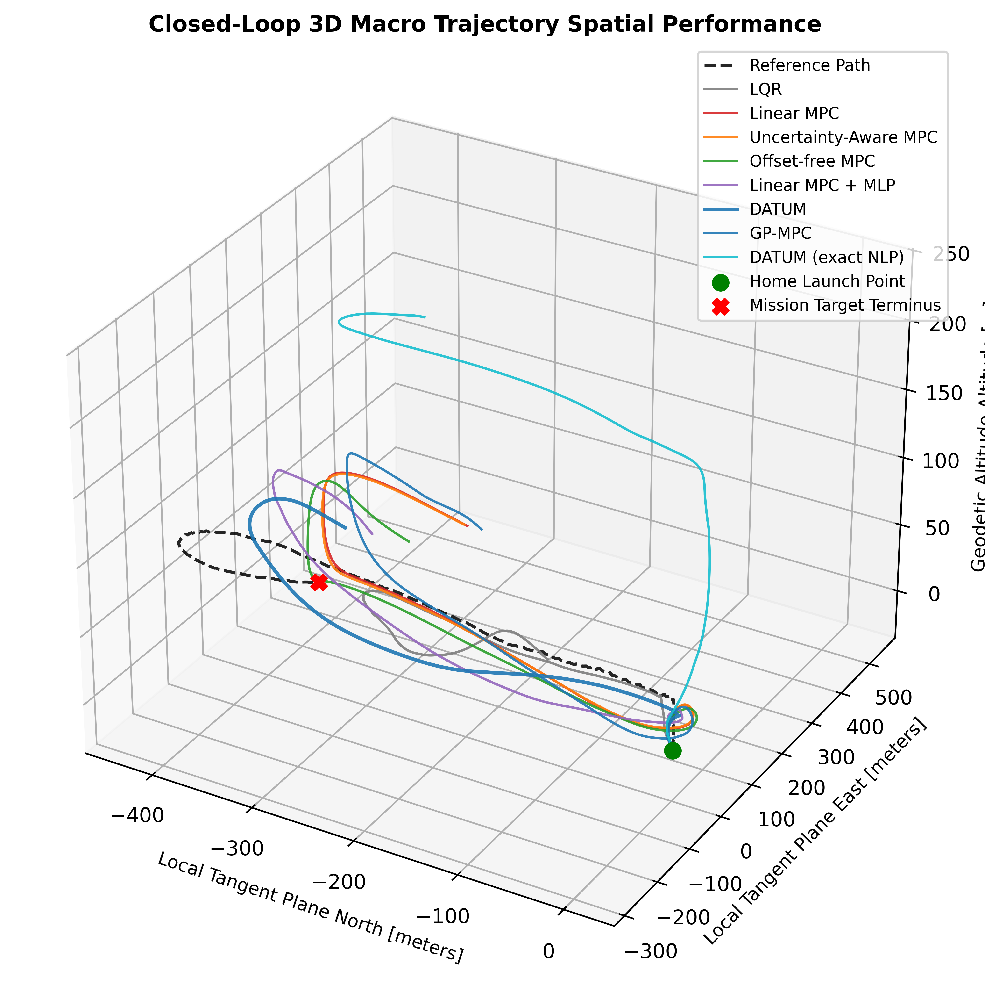

Learning-based MPC · VTOL · real time
DATUM: Learning Only What Matters
A predictive controller for a 21.5-kg lift-plus-cruise VTOL that adds a neural-network correction only to the states where a held-out test shows learning helps, identified entirely from autopilot flight logs.
- 10×faster than the exact solve: 30 ms vs. 300 ms per step
- Besterror in every wind scenario, on a flight the models never saw
- 2–5×less run-to-run variation than learning every state
Validated across flights and against ArduPilot software-in-the-loop simulation with the real autopilot code. Manuscript in preparation.